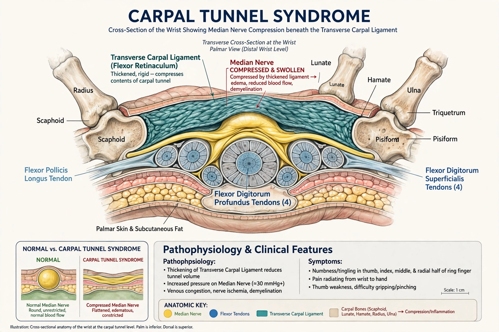

Carpal tunnel syndrome (CTS) is a nerve compression syndrome associated with the collected signs and symptoms of compression of the median nerve at the carpal tunnel in the wrist. The main symptoms are pain, numbness and tingling in the thumb, index finger, middle finger and the thumb side of the ring finger. Symptoms typically start gradually and during the night. Pain may extend up the arm. Weak grip strength may occur, and after a long period of time the muscles at the base of the thumb may waste away.
| Carpal tunnel syndrome | |
|---|---|
 | |
| Specialty | Orthopedics, neurology, plastic surgery |
| Symptoms | Numbness, tingling, pain in median-nerve distribution of hand |
| Risk factors | Diabetes, obesity, pregnancy, hypothyroidism, rheumatoid arthritis, repetitive hand work |
| Treatment | Wrist splinting, corticosteroid injection, surgery (carpal tunnel release) |
The carpal tunnel is a narrow passageway in the wrist bounded by the carpal bones and the transverse carpal ligament (flexor retinaculum); through it pass the median nerve and nine flexor tendons. Swelling of the tendon sheaths or other space-occupying changes raise pressure in the tunnel and injure the nerve. Most cases are idiopathic; established risk factors include diabetes, obesity, hypothyroidism, pregnancy (often resolving after delivery), rheumatoid arthritis, and amyloidosis. Whether ordinary keyboard use causes CTS remains debated; forceful repetitive work and vibration have clearer associations.
Diagnosis is based on symptoms and signs — nocturnal paraesthesia, a positive Phalen maneuver or Tinel sign at the wrist — supported by nerve conduction studies, which show slowed median sensory and motor conduction across the wrist, and increasingly by ultrasound measurement of nerve cross-sectional area.
Conservative measures include night wrist splints holding the wrist neutral, activity modification, and corticosteroid injections, which give short-term relief. For persistent, severe, or motor-involved cases, surgical division of the transverse carpal ligament (carpal tunnel release), open or endoscopic, is definitive and among the most common hand operations.
CTS affects roughly 1–5% of adults, more often women (about 3:1) and typically between ages 40 and 60. It is a significant cause of work disability and lost time in manual occupations.
From Wikipedia, the free encyclopedia (recreated from memory).